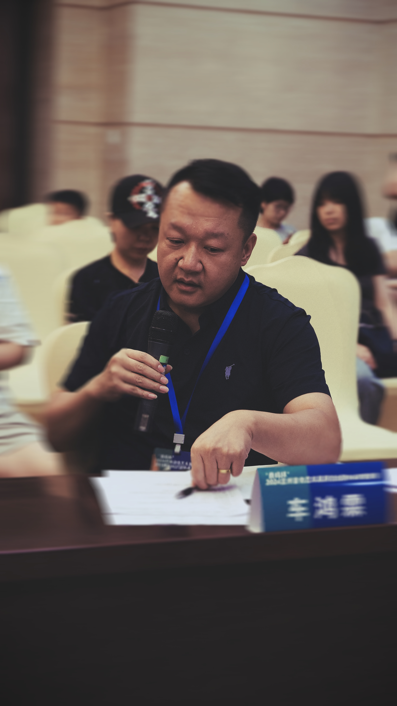

关于车老师
十八年专注少儿吉他教育，用专业和爱心陪伴每个孩子的音乐成长

🎸车老师照片
放入 teacher.jpg 即可替换
工作室创始人 / 吉他教师
车鸿霖
中央音乐学院 · 艺术学学士 · 深耕吉他教学近二十年 · 累计培养1000+学员
车鸿霖，毕业于中央音乐学院，获艺术学学士学位，是集演奏与教育于一身的专业音乐人。他不仅在吉他领域造诣深厚，还熟练掌握贝斯演奏技巧，能够将贝斯的律动与和声特性灵活运用到音乐创作与演奏中。
自1997年结缘吉他，车鸿霖先后师从甘肃省著名演奏家郭卫红、全国十大吉他演奏家李建国教授与中央音乐学院陈谊教授，在多位名师的悉心指导下，奠定了深厚的艺术根基。
2003年，车鸿霖入伍兰州军区装备部军乐团，兼任长号手、吉他手与贝斯手，积累了丰富的舞台经验。2016年，他作为暖场嘉宾亮相日本指弹大师田中彬博演出，展露演奏实力。2017年，车鸿霖组建甘肃省首支爵士乐队——自由落体Free Fall乐队，并担任吉他手，期间获爵士吉他大师马思道（Martin）与顾忠山的指导，演奏风格更趋多元。
作为兰州市音乐家协会会员、兰州市文艺家联合会第二党支部书记，他同时担任甘肃吉他专业委员会理事、兰州市吉他专业委员会常务理事，以及中国音乐学院考级办外聘教师，专业影响力广泛。深度参与兰州2024「泰玛杯」吉他大赛艺术周，担任组委会委员兼评委，以专业视角推动本地音乐发展。
在音乐教育领域，车鸿霖深耕吉他、贝斯、尤克里里教学与乐队排练指导近二十年，教学成果斐然。他培养出多名学员成功考入四川音乐学院、星海音乐学院、浙江传媒大学等知名艺术院校，更有众多学生在他的指导下顺利通过中国音乐学院、文旅部考级，斩获多个十级及专业演奏级证书，其卓越的教学能力为音乐教育事业培育了大批优秀人才。
车老师始终秉持"打好基础、循序渐进"的理念——不急于求成，不拔苗助长，让每个孩子都在正确的轨道上稳步前进，在专业领域与教育普及中均取得显著成就。
教学理念
学音乐不是为了成为演奏家，而是收获一项终身受益的技能
打好正确基础
入门阶段最关键。我们严格把关姿势、手型、指法等基本功，避免养成不良习惯。正确的开始，让后续学习事半功倍。
科学练习方法
不盲目追求练习时长，而是强调练习效率。根据儿童注意力特点，设计分段练习计划，让孩子在最佳状态下学习和进步。
培养终身热爱
音乐是一生的朋友。我们希望孩子不仅学会弹吉他，更能在音乐中找到快乐和自信。不功利、不焦虑，让音乐自然融入生活。
常见问题
家长最关心的问题，我们一一解答
孩子几岁开始学吉他最合适？
一般建议6岁左右开始。这个年龄段的孩子手指力量和协调性已经适合吉他学习，同时也具备了基本的专注力和理解能力。当然，每个孩子发育情况不同，可以带孩子来免费体验一次，车老师会给出专业的建议。
学多久能看到效果？
在保持每周正常练习的情况下，大约3个月可以掌握简单的歌曲弹唱。当然，学习进度因人而异，我们更看重的是孩子基本功的扎实程度，而不是速成。"慢就是快"，打好基础后，进步会越来越快。
需要给孩子买吉他吗？
需要购买。学习吉他需要日常练习，家里有琴才能保证练习质量。购买时最重要的是选择趁手、适合孩子年龄和身高尺寸的乐器——琴太大或太小都会影响手型和演奏姿势。车老师会根据每个孩子的具体情况推荐合适的吉他型号和尺寸，避免家长盲目购买不合适的乐器。工作室上课期间也免费提供用琴。
1对1和小班课哪个更适合？
各有优势：1对1教学针对性强、进度灵活，适合想快速进步或需要针对性辅导的学员；小班课（4-6人）则有同伴互动，孩子之间可以互相激励，培养合奏能力和团队意识。建议先通过免费体验课了解孩子的特点，再做选择。
孩子一时有兴趣，怕学几天就不学了怎么办？
这是家长最常担心的问题。我们的建议是：先通过免费体验课让孩子真实感受一下。在教学中，车老师会用生动有趣的方式引导孩子，让学习过程不枯燥。同时，小班课的同伴效应也能很好地维持孩子的学习热情。关键是不给孩子太大压力，让音乐成为快乐的事。
可以参加考级和比赛吗？
当然可以。我们在教学中会融入考级内容，帮助有意愿的学员备考。同时也会推荐优秀学员参加各类少儿吉他比赛，车老师有丰富的比赛指导经验，能够帮助学员在舞台上自信展示。